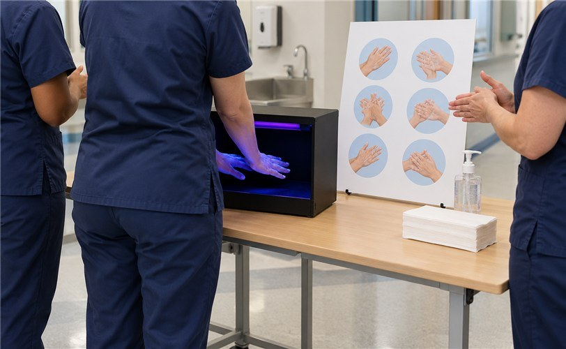
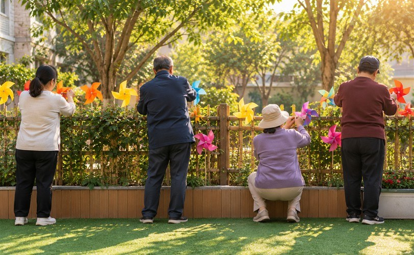
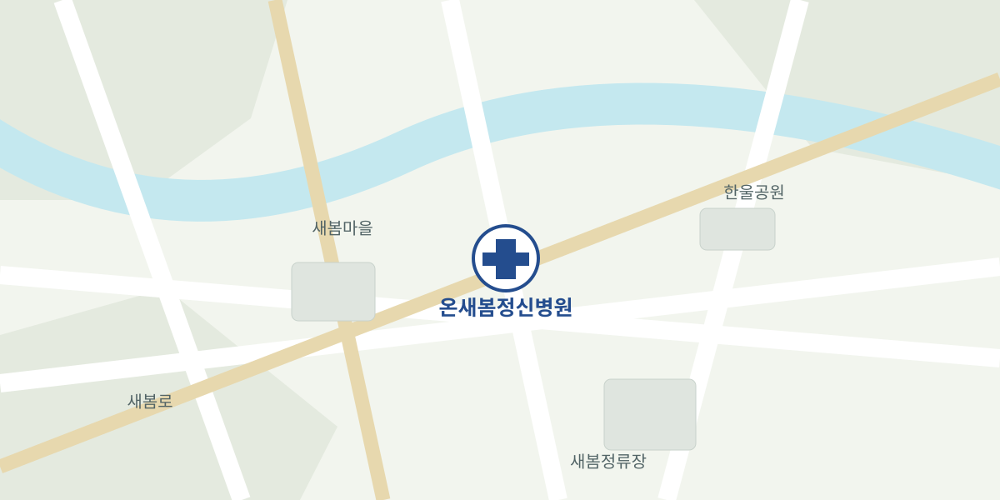

01
03
SERVICE
온새봄의
온새봄의
의료 서비스
환자의 이야기에 귀 기울이며
안심하고 진료받을 수 있는 환경을 마련합니다.
DOCTOR
온새봄의
온새봄의
믿을 수 있는 의료진
의료진은 환자 한 분 한 분을 존중하며
충분히 설명하고 함께 치료 방향을 정합니다.
01
03
PROGRAM
온새봄의
온새봄의
치료 프로그램
환자에게 필요한 활동과 훈련을 함께 정하고
치료에서 일상 복귀까지 이어갑니다.
NEWS
온새봄의
온새봄의
다양한 소식과 이야기
온새봄정신병원의 일상과
새롭게 진행한 활동을 전합니다.
-
10 / 12

NEWS손 씻기 교육으로 살펴본 손 위생 습관
10월 초 병원 직원과 입원 환자가 함께 손 씻기 체험에 참여했습니다. 손에 형광 로션을 바른 다음 자외선 관찰 장치로 평소 세척이 잘되지 않는 부위를 살펴보았습니다. 이어 손바닥과 손등, 손가락 사이, 손톱 주변을 차례로 문지르는 여섯 단계 세척법을 직접 연습했습니다. 손을 씻고 난 뒤에는 관찰 장치로 한 번 더 확인하여 남아 있는 형광 물질과 처음 모습을 비교했습니다. 참여자들은 손톱 밑과 손가락 사이가 생각보다 쉽게 놓치는 부위라는 점을 이야기했고, 평소에도 씻는 순서를 기억하겠다는 소감을 전했습니다. 활동을 마친 분들에게는 손 보습용품과 작은 간식을 나누었습니다. 교육에 적극적으로 참여해 주신 분들께 감사드리며, 병원에서는 앞으로도 일상에서 실천할 수 있는 감염 예방 활동을 이어가겠습니다.
-
09 / 18

NEWS가을 병동 나들이와 지역사회 적응 활동
병동 구성원들이 함께 해안 산책길을 방문했습니다. 탁 트인 풍경을 바라보며 걸은 뒤 가까운 식당에서 식사를 하고, 각자 먹고 싶은 간식을 골라 계산하는 활동도 진행했습니다. 병원 밖에서 이동하고 주문하며 지역의 여러 시설을 이용해 보는 시간이었습니다. 참여한 분들은 자연 속에서 기분을 전환하고 다른 사람들과 이야기를 나눌 수 있어 반가웠다는 소감을 들려주었습니다.
-
09 / 16NEWS
이동 마음건강 상담팀의 병원 방문
지역 마음건강지원센터의 이동 상담팀이 병원을 찾아 직원과 입원 환자의 스트레스 상태를 살폈습니다. 이동 상담은 거주지 가까이에서 도움을 받고 싶은 분들을 위해 상담 장비를 갖춘 차량으로 찾아가는 프로그램입니다. 이번에는 돌봄 업무로 긴장을 느끼기 쉬운 직원과 병동 구성원이 심박 변이도 측정에 참여했습니다. 몸의 긴장과 피로 정도를 수치로 살펴본 뒤 최근 생활과 휴식 시간을 돌아보고 담당자와 결과를 이야기했습니다. 환자의 회복을 지원하는 일과 함께 직원이 건강하게 근무할 수 있는 환경도 꾸준히 살피겠습니다. 심박 변이도는 심장이 뛰는 간격의 작은 변화를 기록하는 지표입니다. 여러 환경 자극과 자율신경 반응에 따라 값이 달라질 수 있으며, 측정 결과는 스트레스나 피로를 이해하기 위한 참고 자료로 활용합니다.

LOCATION
온새봄정신병원으로
온새봄정신병원으로
오시는 길
주소
서울특별시 새온구 새봄로 24 온새봄정신병원
대표번호
010-4894-4905
진료시간
-
오전진료
09:00 ~ 12:00
-
점심시간
12:00 ~ 13:30
-
오후진료
13:30 ~ 17:00
셔틀버스
-
평일운행
09:00 ~ 17:00
-
승차장
병원 현관(매시 20분·40분·정각)
새봄정류장(매시 10분·30분·50분)
＊ 공휴일과 점심시간(12:00~13:00)에는 운행하지 않습니다.
시내버스
12, 12-1, 25, 38, 71, 82번
지하철
-
1호선
새온역에서 내려 건너편 정류장에서
38번 버스를 이용해 새봄마을 하차 -
2호선
온마루역에서 나와 중앙 정류장에서
12, 25, 71번 버스를 이용해 새봄마을 하차한울역 2번 출구 앞 정류장에서
82번 또는 마을버스 3번 이용 후 새봄마을 하차
자가운전
-
새온동 방면
새온터널을 지나 새봄우체국 앞에서
돌아 나와 100m 앞 오른쪽 진입로 이용 -
한울동·온마루 방면
온마루사거리에서 새온터널 쪽으로 이동해
터널 입구 100m 전 오른쪽 진입로 이용
 HOME
HOME 
개인정보처리방침

온새봄정신병원은 상담을 신청하는 분의 개인정보를 보호합니다. 이 방침에서는 홈페이지에 제공한 정보의 사용 목적과 처리 방법, 보관 기간, 열람이나 정정을 요청하는 방법을 설명합니다.
1. 개인정보 수집에 대한 동의
홈페이지에서 상담을 신청할 때에는 개인정보 처리 내용을 먼저 확인할 수 있습니다. 신청자가 수집 항목과 이용 목적을 읽고 동의 항목을 선택한 경우에만 상담 접수를 진행합니다.
2. 개인정보의 수집목적 및 이용목적
홈페이지 문의에 답하고 예약 신청을 확인하기 위해 개인정보를 처리합니다. 접수한 분을 구분하고 연락을 드리는 일, 신청한 서비스의 이행, 오류나 불편사항의 처리, 이용 현황 파악에 필요한 범위에서 사용합니다. 새로운 안내를 받을지 여부는 신청자가 선택할 수 있으며, 기본권을 침해할 우려가 있는 민감정보는 홈페이지에서 요구하지 않습니다. 추가로 필요한 자료가 있다면 그 이유와 항목을 설명하고 별도의 동의를 받습니다.
3. 수집하는 개인정보 항목
상담 신청 화면에서는 이름과 연락처를 입력받습니다. 홈페이지 이용 과정에서는 접속 시각, 이용 기록, 브라우저의 쿠키와 접속 주소 등이 기록될 수 있습니다. 진료나 서류 발급에 필요한 정보는 해당 업무를 접수할 때 별도로 안내하며, 수집 경로는 홈페이지 신청 화면과 병원 접수 창구입니다.
4. 쿠키에 의한 개인정보 수집
쿠키는 홈페이지를 방문할 때 브라우저에 저장되는 작은 정보 파일입니다. 병원은 방문 환경과 이용 상태를 확인하고 일부 설정을 유지하는 데 쿠키를 사용할 수 있습니다. 쿠키에 담긴 정보만으로 방문자 개인을 직접 알아보지는 않습니다. 브라우저 설정에서 저장을 허용하거나, 저장 전에 알림을 받거나, 모든 쿠키를 차단할 수 있습니다. 쿠키를 차단하면 일부 편의 기능이 제한될 수 있으며, 사용 중인 브라우저의 개인정보 설정 메뉴에서 언제든 선택을 바꿀 수 있습니다.
5. 개인정보의 제3자에 대한 제공
받은 정보는 안내한 업무 목적과 동의 범위 안에서만 사용합니다. 법령에 근거가 있거나 이용자가 별도로 동의한 경우를 제외하고 다른 기관에 넘기지 않습니다. 업무를 외부에 맡기거나 제휴기관과 자료를 공유할 필요가 생기면 대상 기관, 전달 항목, 사용 목적과 기간을 먼저 알리고 필요한 동의 절차를 거칩니다.
6. 개인정보의 열람/정정
자신의 정보가 어떻게 기록되어 있는지 확인하거나 잘못된 내용을 고쳐 달라고 요청할 수 있습니다. 개인정보 담당자에게 연락하면 본인 확인을 거쳐 처리합니다. 오류 정정을 신청한 항목은 확인이 끝나기 전까지 업무에 사용하지 않으며, 처리 결과와 사유를 신청한 분께 알려드립니다.
7. 개인정보 수집, 이용, 제공에 대한 동의철회
개인정보 이용에 관한 동의를 철회하려면 홈페이지에 안내된 담당자에게 연락해 주세요. 본인 확인 후 법령에 따라 보관해야 하는 자료가 있는지 살피고, 그 밖의 자료는 삭제하거나 처리를 중단합니다. 철회 요청을 접수한 방법과 같은 방식으로 처리 결과를 알려드립니다.
8. 개인정보의 보유기간 및 이용기간
상담이나 예약을 위해 받은 정보는 해당 업무를 마치고 보관 목적이 끝나면 삭제합니다. 문의를 접수하고 답변한 자료는 상담 처리가 완료된 시점에, 예약과 관련된 자료는 예약 및 후속 업무가 종료된 시점에 정리합니다. 법령상 보관 의무가 있는 자료는 정해진 기간 동안 분리해 보관하며, 더 오래 보관해야 하는 다른 사유가 있다면 항목과 기간을 알리고 동의를 받습니다.
7. 개인정보 관리책임자
개인정보의 처리와 관련해 궁금하거나 불편한 사항이 있으면 아래 담당자에게 알려 주세요. 요청 내용을 확인한 뒤 필요한 조치와 답변 일정을 안내합니다. 정보 열람, 오류 정정, 동의 철회에 관한 신청도 같은 연락처에서 접수합니다.
- [개인정보 관리책임자]
-
담당 : 김진수 전화 : 010-4894-4905
홈페이지를 이용하면서 개인정보 침해가 의심되거나 처리에 대한 설명이 필요하면 개인정보 담당자에게 문의할 수 있습니다. 접수한 내용은 확인 과정을 거쳐 답변하고 필요한 조치를 진행합니다. 병원을 통한 해결이 어렵다면 개인정보 관련 공공 상담기관의 안내를 이용할 수 있습니다. 상담을 신청할 때에는 불편을 겪은 시점과 관련 화면, 원하는 조치를 함께 알려 주시면 확인에 도움이 됩니다.